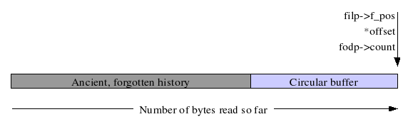

...making Linux just a little more fun!
By Bob Smith
Introduction
Build and Install /dev/fanout
How /dev/fanout Works
Security and Obsolescence
This article describes a Linux module that replicates its input on all of its outputs, a so called "fanout" or "one to many" multiplexer.
Purpose: The purpose of fanout is to give Linux a simple broadcast IPC.
Our own purpose for writing the module was to distribute log messages to one or more processes that want to be notified when an event occurs. We use /dev/fanout, a web server, and XMLHttpRequest on a web client to build an alarm system with multiple web interfaces running simultaneously. One nice feature of our alarm system is that the web interfaces don't use polling but still update automatically when a new alarm system message arrives.
Common Approaches to Broadcast: The two most common broadcast mechanisms in Linux are signals and UDP packets. You can broadcast a signal to a group of related processes using the kill command with a PID of zero. This works well if all of the processes are related and if the program knows what action is required on your signal.
Signals will not work for our application since there is no way to directly route a signal from a web server to a web client, and because web servers do not know that we want to redraw certain web screens on a particular signal.
We can also broadcast events using UDP or TCP. We've built event servers which accept TCP connections and broadcast event information down each accepted connection. We use XMLHttpRequest to request a PHP page that opens the TCP connection and waits for the event. While this approach works well, it requires yet another process and has the slight extra burden of an additional TCP connection for each web client.
A Better Broadcast Approach: A better approach would be to have something like a FIFO, but instead of having all of the listeners compete for the single copy of the input message, have all of the listeners get their own copy. Consider the following bash dialog:
mkfifo event_fifo cat event_fifo & cat event_fifo & cat event_fifo & echo "Hello World" > event_fifo Hello World
The message appears only once, since only one instance of the cat command is given the fifo output. Now let's consider the same experiment using fanout:
cat /dev/fanout & cat /dev/fanout & cat /dev/fanout & echo "Hello World" > /dev/fanout Hello World Hello World Hello World
The message now appears once for each of the three listening cat commands. We use bash commands just to illustrate what fanout does. Its real power lies in letting many different programs get identical copies of a data stream.
Which fails: send or receive? No matter how hard we try to avoid it, one day we'll find a reading process that can not keep up with the writing process. Allocating more memory postpones the problem but does not eliminate it. When this problem occurs we have two choices: apply back pressure to the writer causing the writer to block, or let the readers miss some output.
The problem with blocking the writing process is that you may affect other parts of the system. Our original purpose was to build an alarm system and we chose to route all event notifications through syslogd. Since we have /dev/fanout as a target in the syslog.conf file, blocking the writer would block syslogd and defeat the whole purpose of our alarm system.
The author of fanout very deliberately chose to cause the reader to fail when it can not keep up. Data is stored in a circular buffer and if a reader can not keep up with the writer, it will eventually ask for data that is no longer in the circular buffer. The fanout device returns an EPIPE error to the reader when this happens. In our application for /dev/fanout we are happy to protect syslogd at the expense of the web clients when we are forced to choose one over the other.
The source code to the fanout module is available as a compressed tarball fanout.tgz, or you can pick up the individual files, fanout.c and Makefile.
Build the module with the following commands:
cd /usr/src/linux tar -xzf fanout.tgz cd fanout make
When you install the module you can set the size of the circular buffer and can set the verbosity of the printk messages. The default buffer size is 16k and the default debug level is 2. A debug level of 3 traces all calls in the module and a debug level of 0 suppresses all printk messages. Here is an example that overwrites the default values for buffer size and debug level:
insmod ./fanout.ko buf_sz=8192 debuglvl=3
Fanout uses a kernel assigned major number so you need to look at /proc/devices to see what was assigned. The following lines create all ten of the possible instances of a fanout device.
MAJOR=`grep fanout /proc/devices | awk '{print $1}'`
mknod /dev/fanout c $MAJOR 0
mknod /dev/fanout1 c $MAJOR 1
mknod /dev/fanout2 c $MAJOR 2
mknod /dev/fanout3 c $MAJOR 3
mknod /dev/fanout4 c $MAJOR 4
mknod /dev/fanout5 c $MAJOR 5
mknod /dev/fanout6 c $MAJOR 6
mknod /dev/fanout7 c $MAJOR 7
mknod /dev/fanout8 c $MAJOR 8
mknod /dev/fanout9 c $MAJOR 9
If all has gone well, the "Hello World" example given above should now work for you.
This section is a high level design review of the fanout module. We explain the design and architecture, and relate specific lines of code in the module to the overall design.
The key to understanding how fanout works is to know how a little about how read() works. If you were to open a disk file and make five read() calls with each call reading a thousand bytes, you would expect the next read to give you the data starting with byte 5000. Internally, the operating system keeps a counter, called f_pos, that remembers where you are in the file. Once you've read the first 5000 bytes, you don't normally want to read them again, and since you aren't likely to ask for them again, fanout can forget them. The mechanism used to remember only the most recent data is a circular queue.
The fanout device uses the count variable to keep track of how many bytes have been written so far. At quiescence, the readers have all read count bytes (count and f_pos are equal), and the readers are now asking for data starting at *offset (which also equals count). 
When a writer adds data to the queue, the count variable is incremented by the amount added. Each of the readers must now wake and read the bytes between *offset and count. After adding data to the queue, a writer wakes any sleeping readers with the call to wake_up_interruptible() in fanout_write().
Buffer overflow: One of the fundamental decisions to make in a design is what to do when a reader can not keep pace with the writers. In many designs you would apply flow control to the writers to slow them down to keep pace with the slowest reader. The fanout device, however, returns an error to the slow reader. Specifically, the reader gets an EPIPE error when it requests data that is no longer in the circular buffer (i.e. *offset < count - buf_sz, where buf_sz is the number of bytes in the circular buffer).
A reader does not immediately get an EPIPE after opening a fanout device that's been operating for awhile because in the file open routine, fanout_open(), we explicitly force the reader to be caught up with the writers. The line of code that does this is:
filp->f_pos = fodp->count;
Code notes: It is said that programmers can read code and know what it does, but they can not read a variable and know what it means. So instead of reviewing the code, we are going to review the variables.
The fanout module supports up to NUM_FO_DEVS instances of a fanout device. NUM_FO_DEVS is currently set to ten. Each instance of a fanout device is described by the following data structure:
struct fo {
char *buf; /* points to circular buffer */
int indx; /* where to put next char recv'd */
loff_t count; /* number chars received */
wait_queue_head_t waitq; /* readers wait on this queue */
struct semaphore wlock; /* write lock to keep buf/indx sane */
};
Let's look at each of these variables in turn:
buf: The buf variable points to the start of the buf_sz number of bytes allocated for the circular queue. The memory is not allocated until the first open() on the device, and the memory is allocated using kmalloc(). Allocated memory is not freed until the module is unloaded.
indx: This variable gives the location of where to place the next byte in the circular queue. It is updated by fanout_write() as bytes are added to the queue. When indx gets to buf_sz, it wraps back to zero.
count: This variable is the total number of bytes written to the device. It is updated only by fanout_write() and a reader has data to read when count is not equal to *offset.
waitq: When a reader has no new data to read it blocks until new data is available. Specifically, the reading process sleeps in a call to wait_event_interruptible(). The writer's call to wake_up_interruptible() causes the readers to wake and continue execution with the lines of code immediately after the wait_event_interruptible().
wlock: While writers are writing to the circular queue, there is a short time during which the count and indx variables are not yet consistent with the data in the queue. During this window of inconsistency another writer might run and inadvertently corrupt the queue. The wlock mutex prevents this by locking out other writers while one writer is updating the queue.
One final note on the code is the use of the *private_data in the file structure. Fanout uses this variable to store a pointer to the struct fo appropriate to that file. The FanOut Device Pointer (fodp) is usually retrieved at the start of a routine with a line of code like this:
struct fo *fodp = (struct fo *)filp->private_data;
Known bugs: While there may be several implementation bugs, the one possible design bug is that fanout assumes that the file offset counter never wraps. This should probably be fixed.
Security: In our use of /dev/fanout we let a web server read directly from it so that web clients can be updated when an event occurs. Giving the web server direct access to a device file is considered a security risk. You generally don't want your web server to follow symbolic links and you don't want the file system with the web server root directory to allow device nodes in it. (The file system should be mounted with the nodev option.) The fear is that if an attacker breaks Perl, PHP, or some other component of the web server, the attacker might be able be able to create /dev/hda1, /dev/mem, or some other critical device.
We will be using /dev/fanout in an appliance where, after boot, we can at least drop the system capability CAP_MKNOD when we drop the other system capabilities.
Obsolete already? It is widely anticipated that one of the next releases of the 2.6 kernel will include two new system calls, tee() and splice(). These calls will probably make obsolete the approach used to build fanout, and might make /dev/fanout entirely obsolete. This might be a good thing since, from a security point of view, it might be better to create a one-to-many multiplexer as a variant of a FIFO that can be attached to a nodev mounted file system. More information on tee() and splice() is available in an article at the Linux Weekly News (http://lwn.net/). The article number is 118750 and you can get to it directly here.
Bob is an electronics hobbyist and Linux programmer. He is one of the authors of "Linux Appliance Design" to be published by No Starch Press.